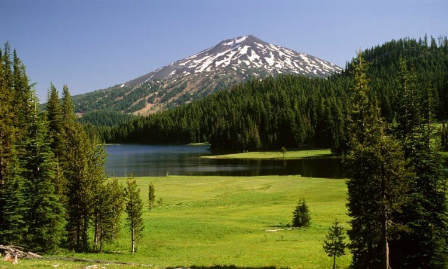
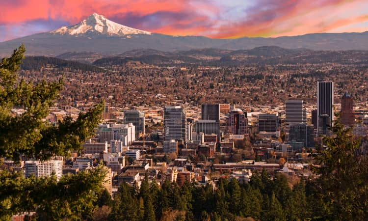
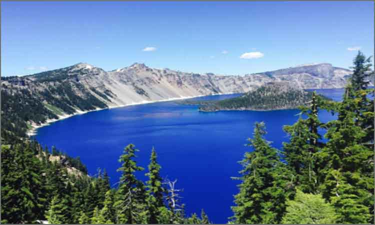
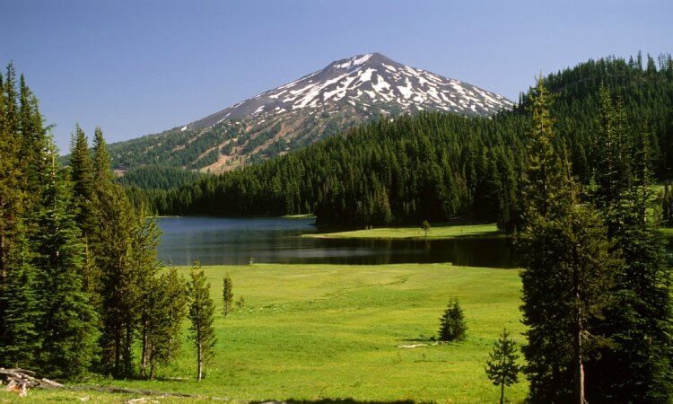
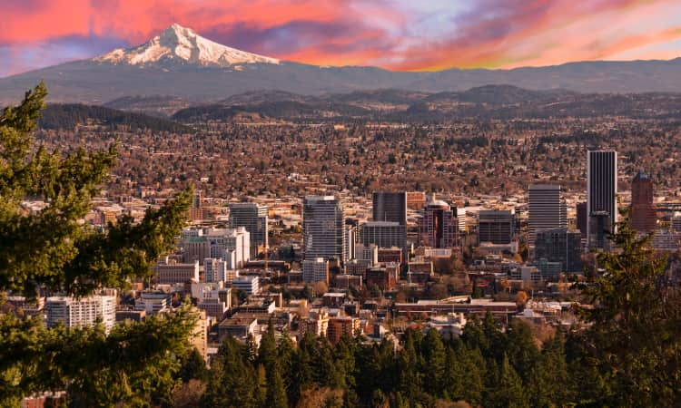
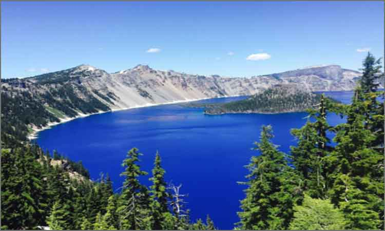
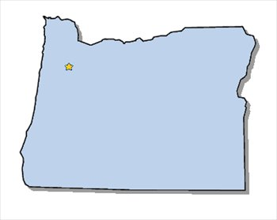

Welome To This Webpage About Major Attractions In The State Of Oregon!
Follow @OregonGovBrownBe like Benny and get vaccinated! 🦫 You will not only protect yourself, but your loved ones and neighbors. #GoBeavs https://t.co/trWQiuJ1lZ pic.twitter.com/fzqa9yAqas
— Governor Kate Brown (@OregonGovBrown) May 8, 2021
Declared a state in 1859, Oregon is one of three states that lies on the West Coast. Generally, the state is divided into two parts; Western Oregon and Eastern Oregon. The west is generally referred to as 'the prettier' part of the state, as it is very green, contains the coastline stretching 363.1 mi, contains the state capital Salem, and contains the Willamette Valley. Western Oregon stretches from Portland down to Grants Pass, and Eastern Oregon contains everything east of this stretch of land. In total, there are 36 counties in the state of Oregon, with the majority of the 4.218 million citizens living in the counties surrounding the Portland Metropolitan Area.
